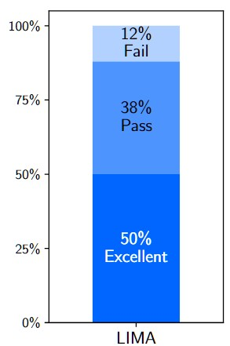
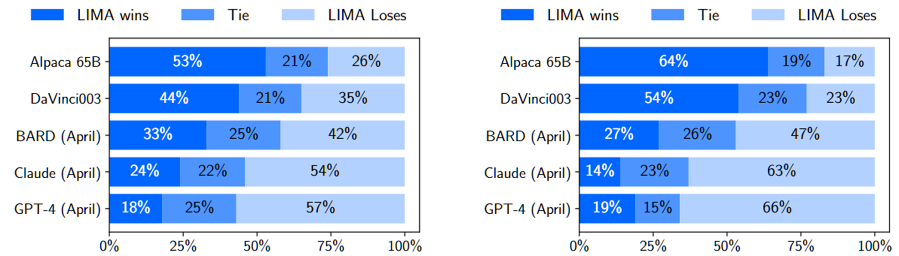
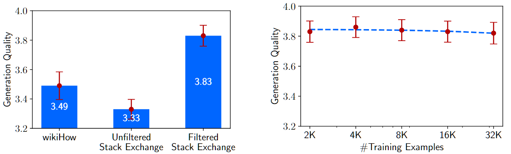
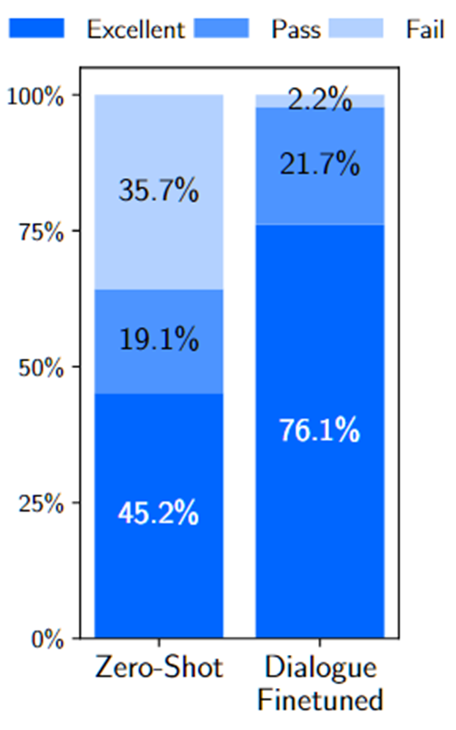

论文：LIMA: Less Is More for Alignment
作者：Chunting Zhou, Pengfei Liu, Puxin Xu, Srini Iyer, etc.
发表：under review，posted on arXiv
大模型的训练往往分为预训练和对齐两个阶段。本工作对这两个阶段对于模型能力的作用进行了研究。首先，作者团队假设模型在预训练阶段学习到几乎所有的能力，而对齐阶段使得模型学习到正确的交互风格，从而产生符合人类要求的输出。针对这一假设，作者团队精心设计了一个包含1000个样本的小数据集，并使用标准监督损失进行训练。实验结果表明，如此训练出来的模型表现良好，从而说明了在高质量的小规模数据集上微调模型的可能性，并验证了假设的正确性。
背景
现有的LLM训练通常包含两步：
- 预训练。模型先在大语料库上进行无监督的预训练，以获得常规的语言理解和生成能力。
- 对齐。在这一阶段，针对不同的目的，使用一些带标签的数据对模型进行微调。一般而言，在这一阶段使用的数据规模在百万级别。这一阶段使用的手段包括：
- 指令微调（Instruction Tuning）
- RLHF（Reinforcement Learning with Human Feedback）
LIMA 这个工作主要研究预训练和对齐这两步对模型的作用，及其相互之间的作用关系。
假设
首先模型提出了Superficial Alignment Hypothesis假设，认为大模型在预训练阶段就学习到了几乎所有的知识和能力。而对齐阶段使模型学习与用户交互的方式或者风格，使得模型的能力能够正确展现出来。
举个例子，预训练阶段就像画一个素描，而对齐阶段则是对这个素描进行上色。
如果这个假设成立的话，由于对齐阶段并不承担学习大量新知识和能力的任务。那么也并不需要大量样本，通过高质量的少量样本微调应该也能达到对齐的目的。而这正是这个工作在实验阶段的验证内容。
数据准备
针对上面提到的假设推论，作者们构建了一个包含了1000个样本的小数据集，使用标准的监督损失函数对LLaMa 65B进行训练。这些数据为prompt-response的结构，经过了精心构造，满足以下特点：
- prompt 多样，response 风格一致。
- prompt 模拟真实用户，回答质量高，且统一为
a helpful AI assistant的口吻。 - 在这1000个样本中，750个构造于三个社区论坛中，而剩余的250个为人工创作。
社区论坛
在这750个来源于社区论坛的样本中，作者们首先筛选出合适的原始样本，然后再经过一些预处理和后处理（比如统一第一人称的口吻，去除超链接、图片等）从而构成。来源的三个论坛情况：
- Stack Exchange. 这是一个由话题进行划分的社区，每个话题为一个exchange，其中最有名的当属Stack Overflow。作者们选取了75个核心exchange和99个其他exchange，并从中按照选取最高分的、且只包含标题的问题作为prompt，并选取最高分的回答作为相应的response。
- wikiHow. 这是一个问答社区。作者们先从19个种类中进行抽样，再从抽到的种类中抽取文章，从而保证多样性。使用标题作为prompt，而正文部分作为response。
- Pushshift Reddit Dataset. 选取
r/AskReddit和r/WritingPrompts这两个子集中点赞数最多的推文。r/AskReddit中的问题作为测试集的prompt，而r/WritingPrompts中的加入训练集。
人工创作
除了来自社区论坛的样本外，作者们还人工创作了250个样本。其中，200个为作者们自己创作的，而50个改写自Super-Natural Instructions。
在创作200个样本的过程中，作者们使用了一致的口吻（a helpful AI assistant），并包含了少部分恶意prompt，并让response与之对抗。作者们发现，一致的口吻能够提升模型的表现，并认为一致的口吻类似let's think step by step的prompt，使模型形成了思维链（chain of thought）。
实验
在实验部分，作者将LIMA与其他大模型进行比较。
评估准则
对于训练好的LIMA模型，为测试集中的每一个prompt生成一个回答，并通过两种方式进行评估：
- 绝对评估。对每一个prompt生成的response的质量通过人工和GPT-4进行评判。根据response的质量，分为Fail, Pass及Excellent三种级别。
- 将LIMA与其他模型进行两两比较：对于一个prompt，双方各自生成一个response，然后比较生成的response的质量。
绝对评估的结果如下图所示：

从图中可以看出，对于测试集中绝大部分的prompt，其response皆为Excellent 或者 Pass，说明LIMA的效果不错。
基线模型
用于对比的其他大模型包括以下几个：
- Alpaca 65B：同样由LLaMa 65B进行微调，其在Alpaca 的含52000个样本的训练集上进行微调。
- OpenAI DaVinci003：使用了RLHF技术
- Google Bard
- Anthropic Claude
- OpenAI GPT-4
LIMA与以上大模型进行两两比较的结果如下图所示：

左边的子图代表人类偏好评估，而右边的子图代表GPT-4评估的结果。从结果可以看出，LIMA的效果优于Alpaca 65B及DaVinci003，尽管它们训练数据量远大于LIMA，且DaVinci003使用了RLHF进行微调。这个结果支持了上文中的假设。
消融实验
消融实验使用LLaMa 7B微调进行。对于每个prompt采样5个response，并让GPT-3.5 Turbo在1-6中打分，最后取平均。
消融的维度有：
- 多样性。由于来自wikiHow所有的prompt都是”how to”类问题，故其被认为是同质的。因此，用wikiHow数据 vs Stack Exchange数据分别训练就构成了多样性的对比。
- 数据质量。使用质量或者风格筛选 vs 不筛选构成了一组对比。
- 数据量。
下图展现了消融实验的结果。

纵轴是生成质量，越高越好。左边子图中，第一列和第三列构成了多样性的消融，而第二列和第三列构成了数据质量的消融。右边子图是数据量的消融结果。
从结果可以看出，多样性和数据质量对模型效果的影响都非常大，而数据量的规模效应并不明显，这与常规理解有所出入。文中因而提出，过往结论中的规模效应可能是由于提升数据量的同时提升了多样性，而非数据量自身的影响。
多轮对话能力
先前提到的1000个样本均为单轮对话的，文中进一步对LIMA的多轮对话能力进行了测试。分别评估了由1000个训练出的LIMA，以及再经过30个多轮对话样本微调的新模型的多轮对话能力。下图为实验结果。

可以看出，仅仅使用30个多轮对话样本就能大幅度提高模型的多轮对话能力，这进一步支持了上文中的假设。
总结
本工作通过精心构造高质量的小数据集对大模型进行微调，从而获得了以下几个结论：
- LLM 的几乎全部能力在预训练阶段获得
- 微调使模型学习到交互的风格与方式
- 可以通过小规模的优质数据进行高效对齐
何为优质数据？
- prompt多样
- response风格统一
- prompt和response的回答文本质量高
最后，文章还讨论了这种微调方式的不足之处。
- 构造优质数据耗费心智，规模难以扩展
- 健壮性未达到企业级标准
✉️ zjuvis@cad.zju.edu.cn